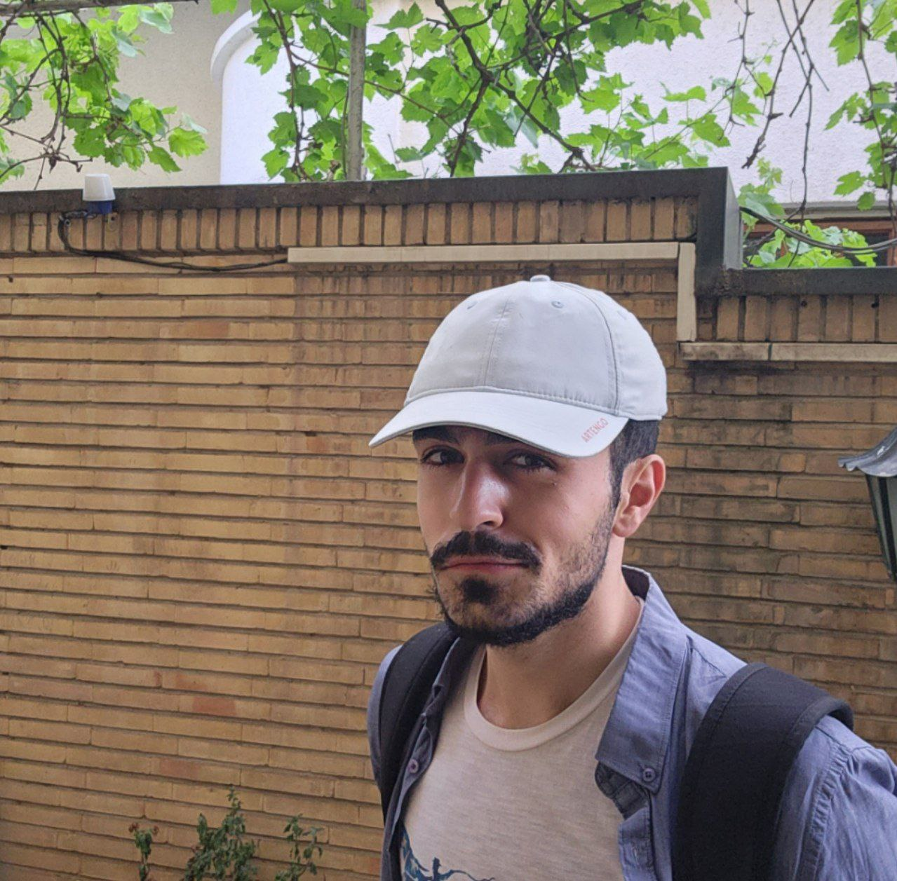

Sam Khanaki
Computer Engineering Student
Sharif University of Technology
Gold Medalist – Iranian Math Olympiad
Interested in Bandit Algorithms, Local Search, and Optimization Theory
Publications · CV · Email · GitHub · LinkedIn
